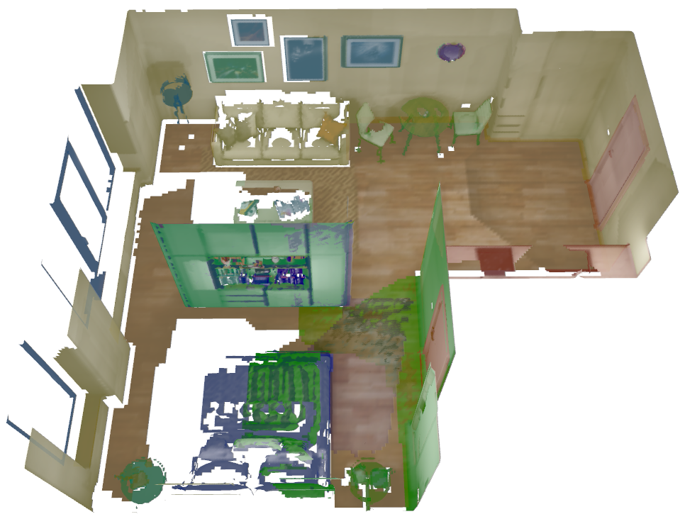

I am a strong supporter of the open source idea and make most of my research and utility code available. In
particular, I try to pay attention to produce modular and re-usable to code to enable the community to extend
and build upon the existing frameworks. Please feel free to use, re-use, modify, or contribute to any of the
projects!
Mapping
|  | Panoptic Mapping. A general framework for semantic volumetric mapping. We provide, among other, a submap-based approach that leverages panoptic scene understanding towards adaptive spatio-temporally consistent volumetric mapping, as well as regular, monolithic semantic mapping. Multi-resolution 3D reconstruction, active and inactive panoptic submaps for temporal consistency, online change detection, and more. |
| NeuralBlox. Incremental volumetric mapping for robot planning based on implicit neural representations. We provide our framework for online fusion of neural representations, and code to train extend different models. Main implementation by Stefan Lionar. |
Planning
 |
MAV Active 3D Planning. A modular framework for online informative path planner (IPP) design. We provide a modular framework for creating, evaluating and employing primarily sampling based, receding horizon algorithms that optimize a gain while minimizing a cost. Online-IPP for Exploration, 3D Reconstruction, and more. |
 |
GLocal Exploration. A modular system for efficient Global and Local exploration planning and mapping in large scale environments, accounting for past pose corrections due to state estimation drift. In a submap-based approach, multiple layers of both mapping and planning are combined to achieve robustness to drift while maintaining efficiency in large scale environments. |
 |
CVAE Exploration Planning. A new approach to local exploration planning by combining learning and the sampling-based planning paradigm! This package provides an open-source implementation of the simulator, datasets, models, and planners presented in our paper on learning sampling-based local exploration. |
 |
Active Learning For Segmentation. A complete pipeline for fully autonomous domain adaptation of semantic segmentation models. we provide simulation, uncertainty estmiation, uncertainty-aware semantic mapping, and informative path planning modules to observe high uncertainty areas and autonomously improve the semantic segmentation over time. Main implementation by René Zurbrügg. |
 |
SSC Exploration. Incremental fusion of 3D scene completion and multi-layer map integration with the measured data for safe, efficient, and itnerpretable exploration mapping and planning . |
Simulation
| Unreal AirSim. This repo contains simulation tools and utilities to perform realistic simulations based on Unreal Engine (UE4), using microsoft AirSim as interface to UE4. | |
| Unreal CV ROS. A package to allow ROS based simulation of a MAV equipped with a 3D-reconstruction sensor. The simulation is performed inside an Unreal Engine 4 (UE4) game. The node-game communcation is carried out utilizing the UnrealCV computer vision plugin for UE4. |
Utilities
| Config Utilities. Utility tools to make working with config structs for ROS (and non-ROS) C++ libraries more uniform, readable, and convenient. |
Phenotyping
| Plant Stress Phenotyping. Computer Vision-based crop phenotyping routines. |